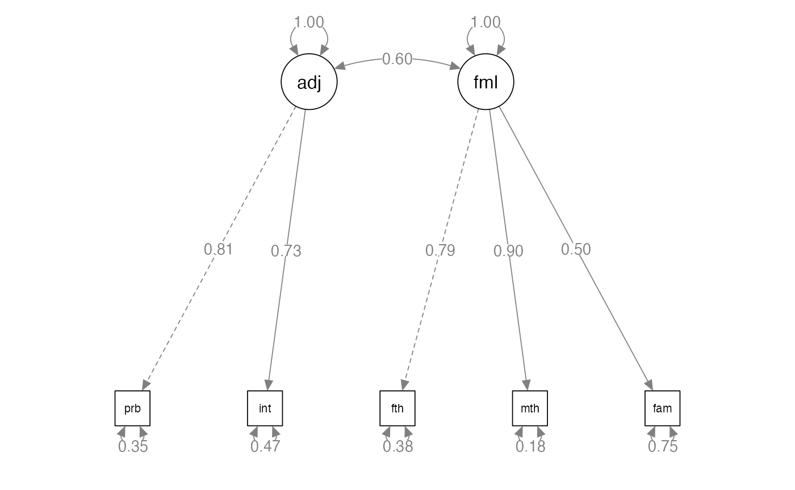
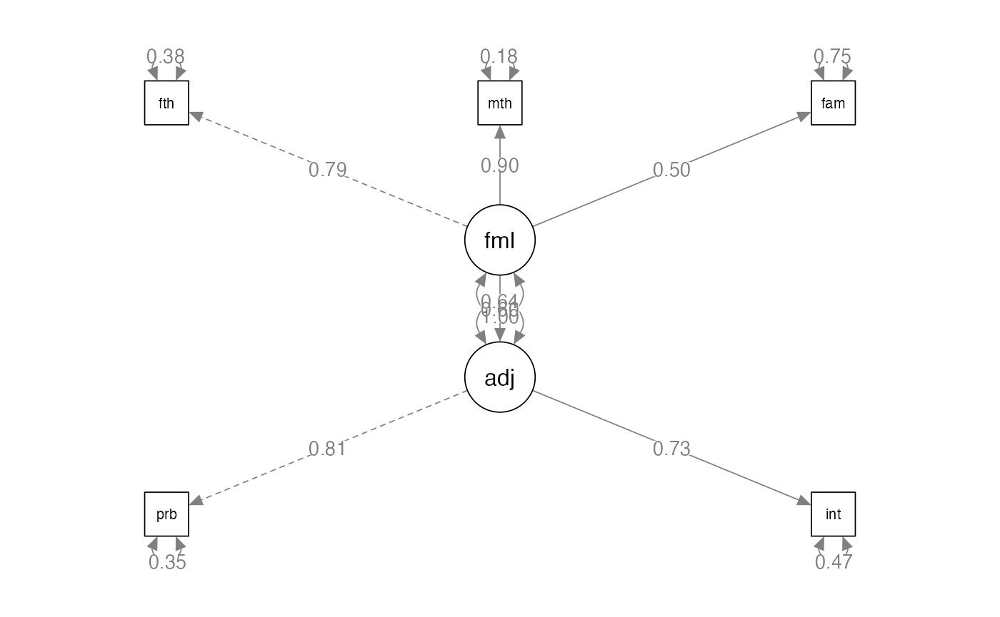
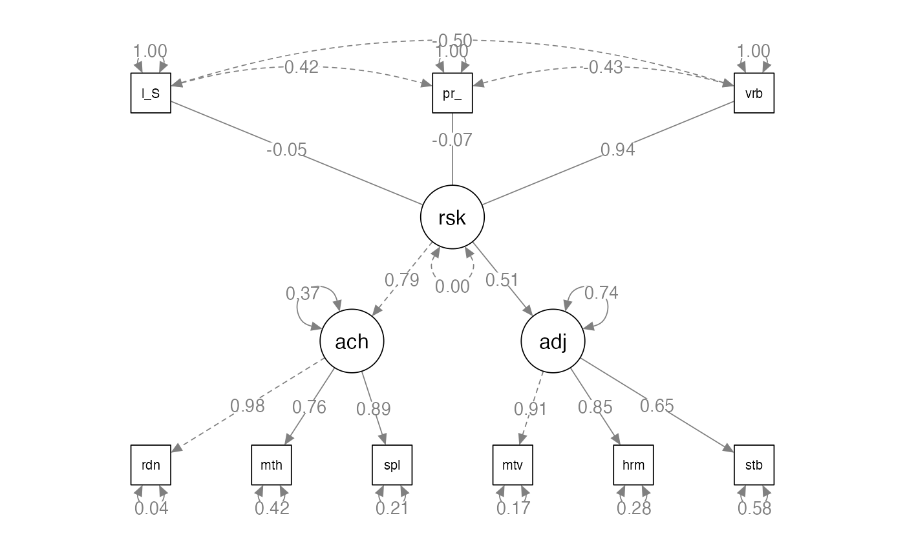

Full SEM
lecture_sem.RmdFull Structural Models
-
A fully latent or full structural model has two parts:
- Measurement model: the latent variable with it’s measured variables (CFA)
- Structural model: the relationship between other variables and the measurement model
The structural model may be a second order latent, like we did last week
The structural model could include other predictors
Or you could simply convert from correlations to a specific prediction direction as part of your structural model

Full Structural Models
-
A reminder from earlier this semester:
- Reflective indicators: we assume the latent variables are the cause, so they are exogenous
- Formative indicators: we assume the latent variables are the criterion, so they are endogenous
Full Structural Models
-
Example of formative indicator
- Income, education level, and occupation all predict your SES
- Stress caused by outside factors
-
Other names people use for these:
- Composite causes
- MIMIC – multiple indicators, multiple causes models

Identification
-
Identification rules of thumb:
- Latent variables should have four indicators
- Latent variables have three indicators AND Error variances do not covary
- Latent variables have two indicators AND Error variances do not covary and Loadings are set to equal each other.
Structural Model Identification
Scaling is also required to identify the structural part
-
2+ emitted paths rule
- Composite variable must have direct effects on two other endogenous variables
Things to Consider
-
Parceling
- When you have large structural models, they can be very complex to fit to a Full SEM if each latent variable has lots of indicators (items).
- Parceling occurs when you create subsets of items to be able to get the model to run and to balance out the number of indicators on each latent.
- At the moment, this topic is still pretty controversial.
How to Model
-
Test each CFA piece separately to make sure they run.
- CFAs that are bad, do not suddenly make good models when the structural component is added!
-
Slowly add structural paths to see if you can get the full model to work.
- If not, try parceling.
- Drop non-significant paths.
How to Model
-
As you add the structural components, you should not see a big change in the loadings to the indicators
- If you do, it means the model is not invariant
- Causes interpretation difficulties
When to Stop?
We have discussed using
modificationindices()and other tricks to improve model fitIn theory, we could add all paths until the model is “perfect”
-
What should the stopping rule be?
- Based on theory
- Fit indices do not greatly improve
- Parsimony

Example Model: Setup
library(lavaan)
library(semPlot)
family.cor <- lav_matrix_lower2full(c(1.00,
.74, 1.00,
.27, .42, 1.00,
.31, .40, .79, 1.00,
.32, .35, .66, .59, 1.00))
family.sd <- c(32.94, 22.75, 13.39, 13.68, 14.38)
rownames(family.cor) <-
colnames(family.cor) <-
names(family.sd) <- c("father", "mother", "famo", "problems", "intimacy")
family.cov <- cor2cov(family.cor, family.sd)Example Model: Build the CFA
- First, we are going to test the measurement model – just the CFAs with a covariance between them.
- Then, we are going to change it to a full SEM, predicting the direction of the relationship between latents.
- We should ensure the measurement model does not change significantly.
Example Model: Build the CFA
family.model <- '
adjust =~ problems + intimacy
family =~ father + mother + famo'Example Model: Analyze the CFA
family.fit <- cfa(model = family.model,
sample.cov = family.cov,
sample.nobs = 203)
#> Warning: lavaan->lav_object_post_check():
#> covariance matrix of latent variables is not positive definite ; use
#> lavInspect(fit, "cov.lv") to investigate.Example Model: Analyze the CFA
family.fit <- cfa(model = family.model,
sample.cov = family.cor,
sample.nobs = 203)Example Model: Summarize the Model
summary(family.fit,
rsquare = TRUE,
standardized = TRUE,
fit.measures = TRUE)
#> lavaan 0.6-19 ended normally after 23 iterations
#>
#> Estimator ML
#> Optimization method NLMINB
#> Number of model parameters 11
#>
#> Number of observations 203
#>
#> Model Test User Model:
#>
#> Test statistic 197.939
#> Degrees of freedom 4
#> P-value (Chi-square) 0.000
#>
#> Model Test Baseline Model:
#>
#> Test statistic 533.051
#> Degrees of freedom 10
#> P-value 0.000
#>
#> User Model versus Baseline Model:
#>
#> Comparative Fit Index (CFI) 0.629
#> Tucker-Lewis Index (TLI) 0.073
#>
#> Loglikelihood and Information Criteria:
#>
#> Loglikelihood user model (H0) -1270.160
#> Loglikelihood unrestricted model (H1) -1171.191
#>
#> Akaike (AIC) 2562.321
#> Bayesian (BIC) 2598.766
#> Sample-size adjusted Bayesian (SABIC) 2563.915
#>
#> Root Mean Square Error of Approximation:
#>
#> RMSEA 0.489
#> 90 Percent confidence interval - lower 0.432
#> 90 Percent confidence interval - upper 0.548
#> P-value H_0: RMSEA <= 0.050 0.000
#> P-value H_0: RMSEA >= 0.080 1.000
#>
#> Standardized Root Mean Square Residual:
#>
#> SRMR 0.186
#>
#> Parameter Estimates:
#>
#> Standard errors Standard
#> Information Expected
#> Information saturated (h1) model Structured
#>
#> Latent Variables:
#> Estimate Std.Err z-value P(>|z|) Std.lv Std.all
#> adjust =~
#> problems 1.000 0.807 0.809
#> intimacy 0.901 0.134 6.741 0.000 0.727 0.729
#> family =~
#> father 1.000 0.789 0.790
#> mother 1.143 0.112 10.165 0.000 0.901 0.903
#> famo 0.630 0.092 6.847 0.000 0.497 0.498
#>
#> Covariances:
#> Estimate Std.Err z-value P(>|z|) Std.lv Std.all
#> adjust ~~
#> family 0.384 0.071 5.441 0.000 0.604 0.604
#>
#> Variances:
#> Estimate Std.Err z-value P(>|z|) Std.lv Std.all
#> .problems 0.344 0.092 3.720 0.000 0.344 0.345
#> .intimacy 0.466 0.084 5.571 0.000 0.466 0.468
#> .father 0.373 0.062 6.035 0.000 0.373 0.375
#> .mother 0.183 0.066 2.758 0.006 0.183 0.184
#> .famo 0.748 0.079 9.530 0.000 0.748 0.752
#> adjust 0.651 0.126 5.157 0.000 1.000 1.000
#> family 0.622 0.104 5.974 0.000 1.000 1.000
#>
#> R-Square:
#> Estimate
#> problems 0.655
#> intimacy 0.532
#> father 0.625
#> mother 0.816
#> famo 0.248Example Model: Improve the Model?
modificationindices(family.fit, sort = T)
#> lhs op rhs mi epc sepc.lv sepc.all sepc.nox
#> 16 adjust =~ famo 136.963 1.467 1.184 1.187 1.187
#> 26 father ~~ mother 136.963 1.785 1.785 6.825 6.825
#> 22 problems ~~ famo 58.596 0.371 0.371 0.732 0.732
#> 27 father ~~ famo 25.310 -0.283 -0.283 -0.536 -0.536
#> 15 adjust =~ mother 25.310 -0.767 -0.619 -0.621 -0.621
#> 25 intimacy ~~ famo 13.685 0.183 0.183 0.310 0.310
#> 14 adjust =~ father 7.800 -0.370 -0.299 -0.299 -0.299
#> 28 mother ~~ famo 7.800 -0.179 -0.179 -0.482 -0.482
#> 20 problems ~~ father 6.001 -0.103 -0.103 -0.287 -0.287
#> 24 intimacy ~~ mother 4.674 -0.096 -0.096 -0.329 -0.329
#> 21 problems ~~ mother 2.723 -0.076 -0.076 -0.302 -0.302
#> 23 intimacy ~~ father 0.117 0.014 0.014 0.034 0.034Example Model: Improve the Model?
family.model2 <- '
adjust =~ problems + intimacy
family =~ father + mother + famo
father ~~ mother'
family.fit2 <- cfa(model = family.model2,
sample.cov = family.cov,
sample.nobs = 203)
#> Warning: lavaan->lav_object_post_check():
#> covariance matrix of latent variables is not positive definite ; use
#> lavInspect(fit, "cov.lv") to investigate.
inspect(family.fit2, "cor.lv")
#> adjust family
#> adjust 1.000
#> family 1.038 1.000Example Model: Diagram the Model
semPaths(family.fit,
whatLabels="std",
layout="tree",
edge.label.cex = 1)
Example Model: Build Full SEM
predict.model <- '
adjust =~ problems + intimacy
family =~ father + mother + famo
adjust~family'Example Model: Analyze Full SEM
predict.fit <- sem(model = predict.model,
sample.cov = family.cor,
sample.nobs = 203)Example Model: Summarize Full SEM
summary(predict.fit,
rsquare = TRUE,
standardized = TRUE,
fit.measures = TRUE)
#> lavaan 0.6-19 ended normally after 20 iterations
#>
#> Estimator ML
#> Optimization method NLMINB
#> Number of model parameters 11
#>
#> Number of observations 203
#>
#> Model Test User Model:
#>
#> Test statistic 197.939
#> Degrees of freedom 4
#> P-value (Chi-square) 0.000
#>
#> Model Test Baseline Model:
#>
#> Test statistic 533.051
#> Degrees of freedom 10
#> P-value 0.000
#>
#> User Model versus Baseline Model:
#>
#> Comparative Fit Index (CFI) 0.629
#> Tucker-Lewis Index (TLI) 0.073
#>
#> Loglikelihood and Information Criteria:
#>
#> Loglikelihood user model (H0) -1270.160
#> Loglikelihood unrestricted model (H1) -1171.191
#>
#> Akaike (AIC) 2562.321
#> Bayesian (BIC) 2598.766
#> Sample-size adjusted Bayesian (SABIC) 2563.915
#>
#> Root Mean Square Error of Approximation:
#>
#> RMSEA 0.489
#> 90 Percent confidence interval - lower 0.432
#> 90 Percent confidence interval - upper 0.548
#> P-value H_0: RMSEA <= 0.050 0.000
#> P-value H_0: RMSEA >= 0.080 1.000
#>
#> Standardized Root Mean Square Residual:
#>
#> SRMR 0.186
#>
#> Parameter Estimates:
#>
#> Standard errors Standard
#> Information Expected
#> Information saturated (h1) model Structured
#>
#> Latent Variables:
#> Estimate Std.Err z-value P(>|z|) Std.lv Std.all
#> adjust =~
#> problems 1.000 0.807 0.809
#> intimacy 0.901 0.134 6.741 0.000 0.727 0.729
#> family =~
#> father 1.000 0.789 0.790
#> mother 1.143 0.112 10.165 0.000 0.901 0.903
#> famo 0.630 0.092 6.847 0.000 0.497 0.498
#>
#> Regressions:
#> Estimate Std.Err z-value P(>|z|) Std.lv Std.all
#> adjust ~
#> family 0.618 0.092 6.705 0.000 0.604 0.604
#>
#> Variances:
#> Estimate Std.Err z-value P(>|z|) Std.lv Std.all
#> .problems 0.344 0.092 3.720 0.000 0.344 0.345
#> .intimacy 0.466 0.084 5.571 0.000 0.466 0.468
#> .father 0.373 0.062 6.035 0.000 0.373 0.375
#> .mother 0.183 0.066 2.758 0.006 0.183 0.184
#> .famo 0.748 0.079 9.530 0.000 0.748 0.752
#> .adjust 0.414 0.095 4.364 0.000 0.636 0.636
#> family 0.622 0.104 5.974 0.000 1.000 1.000
#>
#> R-Square:
#> Estimate
#> problems 0.655
#> intimacy 0.532
#> father 0.625
#> mother 0.816
#> famo 0.248
#> adjust 0.364Example Model: Diagram Full SEM
semPaths(predict.fit,
whatLabels="std",
layout="tree",
edge.label.cex = 1)

Example 2: Setup
family.cor <- lav_matrix_lower2full(c(1.00,
.42, 1.00,
-.43, -.50, 1.00,
-.39, -.43, .78, 1.00,
-.24, -.37, .69, .73, 1.00,
-.31, -.33, .63, .87, .72, 1.00,
-.25, -.25, .49, .53, .60, .59, 1.00,
-.25, -.26, .42, .42, .44, .45, .77, 1.00,
-.16, -.18, .23, .36, .38, .38, .59, .58, 1.00))
family.sd <- c(13.00, 13.50, 13.10, 12.50, 13.50, 14.20, 9.50, 11.10, 8.70)
rownames(family.cor) <-
colnames(family.cor) <-
names(family.sd) <- c("parent_psych","low_SES","verbal",
"reading","math","spelling","motivation","harmony","stable")
family.cov <- cor2cov(family.cor, family.sd)Example 2: Build the Model
- How to define a composite variable?
- We have been using
=~to define a latent variable that predicts manifest variables. - Use
<~to create a composite variable that is predicted by the manifest variables.
Example 2: Build the Model
composite.model <- '
risk <~ low_SES + parent_psych + verbal
achieve =~ reading + math + spelling
adjustment =~ motivation + harmony + stable
risk =~ achieve + adjustment
'Example 2: Analyze the Model
composite.fit <- sem(model = composite.model,
sample.cov = family.cov,
sample.nobs = 158)Example 2: Summarize the Model
summary(composite.fit,
rsquare = TRUE,
standardized = TRUE,
fit.measures = TRUE)
#> lavaan 0.6-19 ended normally after 78 iterations
#>
#> Estimator ML
#> Optimization method NLMINB
#> Number of model parameters 16
#>
#> Number of observations 158
#>
#> Model Test User Model:
#>
#> Test statistic 94.965
#> Degrees of freedom 23
#> P-value (Chi-square) 0.000
#>
#> Model Test Baseline Model:
#>
#> Test statistic 852.585
#> Degrees of freedom 33
#> P-value 0.000
#>
#> User Model versus Baseline Model:
#>
#> Comparative Fit Index (CFI) 0.912
#> Tucker-Lewis Index (TLI) 0.874
#>
#> Loglikelihood and Information Criteria:
#>
#> Loglikelihood user model (H0) -3270.643
#> Loglikelihood unrestricted model (H1) -3223.160
#>
#> Akaike (AIC) 6573.286
#> Bayesian (BIC) 6622.287
#> Sample-size adjusted Bayesian (SABIC) 6571.640
#>
#> Root Mean Square Error of Approximation:
#>
#> RMSEA 0.141
#> 90 Percent confidence interval - lower 0.112
#> 90 Percent confidence interval - upper 0.171
#> P-value H_0: RMSEA <= 0.050 0.000
#> P-value H_0: RMSEA >= 0.080 1.000
#>
#> Standardized Root Mean Square Residual:
#>
#> SRMR 0.089
#>
#> Parameter Estimates:
#>
#> Standard errors Standard
#> Information Expected
#> Information saturated (h1) model Structured
#>
#> Latent Variables:
#> Estimate Std.Err z-value P(>|z|) Std.lv Std.all
#> achieve =~
#> reading 1.000 12.183 0.978
#> math 0.843 0.062 13.545 0.000 10.265 0.763
#> spelling 1.030 0.053 19.583 0.000 12.546 0.886
#> adjustment =~
#> motivation 1.000 8.632 0.912
#> harmony 1.089 0.092 11.861 0.000 9.402 0.850
#> stable 0.654 0.074 8.828 0.000 5.642 0.651
#> risk =~
#> achieve 1.000 0.794 0.794
#> adjustment 0.457 0.074 6.206 0.000 0.511 0.511
#>
#> Composites:
#> Estimate Std.Err z-value P(>|z|) Std.lv Std.all
#> risk <~
#> low_SES -0.033 0.050 -0.647 0.518 -0.003 -0.045
#> parent_psych -0.055 0.050 -1.095 0.274 -0.006 -0.074
#> verbal 0.698 0.055 12.576 0.000 0.072 0.942
#>
#> Variances:
#> Estimate Std.Err z-value P(>|z|) Std.lv Std.all
#> .reading 6.831 3.848 1.775 0.076 6.831 0.044
#> .math 75.732 9.120 8.304 0.000 75.732 0.418
#> .spelling 42.954 6.357 6.757 0.000 42.954 0.214
#> .motivation 15.162 4.920 3.082 0.002 15.162 0.169
#> .harmony 34.034 6.723 5.062 0.000 34.034 0.278
#> .stable 43.376 5.381 8.060 0.000 43.376 0.577
#> risk 0.000 0.000 0.000
#> .achieve 54.931 7.452 7.372 0.000 0.370 0.370
#> .adjustment 55.023 8.469 6.497 0.000 0.738 0.738
#>
#> R-Square:
#> Estimate
#> reading 0.956
#> math 0.582
#> spelling 0.786
#> motivation 0.831
#> harmony 0.722
#> stable 0.423
#> achieve 0.630
#> adjustment 0.262Example 2: Improve the Model?
modificationindices(composite.fit, sort = T)
#> lhs op rhs mi epc sepc.lv sepc.all sepc.nox
#> 29 risk =~ spelling 22.091 -0.607 -5.874 -0.415 -0.415
#> 39 reading ~~ math 22.090 -27.301 -27.301 -1.200 -1.200
#> 54 risk ~~ achieve 15.658 42.911 NA NA NA
#> 56 achieve ~~ adjustment 15.658 19.593 0.356 0.356 0.356
#> 18 risk ~~ risk 15.658 42.911 0.000 0.000 0.000
#> 55 risk ~~ adjustment 15.658 19.593 NA NA NA
#> 37 adjustment =~ math 12.595 0.345 2.979 0.221 0.221
#> 33 achieve =~ motivation 8.857 0.140 1.710 0.181 0.181
#> 48 spelling ~~ motivation 8.351 8.974 8.974 0.352 0.352
#> 40 reading ~~ spelling 8.135 25.450 25.450 1.486 1.486
#> 28 risk =~ math 8.135 0.379 3.665 0.272 0.272
#> 45 math ~~ motivation 7.454 10.793 10.793 0.319 0.319
#> 38 adjustment =~ spelling 7.118 0.208 1.794 0.127 0.127
#> 44 math ~~ spelling 6.189 15.229 15.229 0.267 0.267
#> 27 risk =~ reading 6.189 0.320 3.090 0.248 0.248
#> 51 motivation ~~ harmony 4.044 -27.644 -27.644 -1.217 -1.217
#> 32 risk =~ stable 4.044 -0.138 -1.331 -0.153 -0.153
#> 41 reading ~~ motivation 3.494 -4.224 -4.224 -0.415 -0.415
#> 30 risk =~ motivation 2.929 0.122 1.183 0.125 0.125
#> 53 harmony ~~ stable 2.929 10.495 10.495 0.273 0.273
#> 43 reading ~~ stable 1.885 3.814 3.814 0.222 0.222
#> 36 adjustment =~ reading 1.618 -0.073 -0.634 -0.051 -0.051
#> 34 achieve =~ harmony 1.128 -0.059 -0.717 -0.065 -0.065
#> 46 math ~~ harmony 0.939 -4.694 -4.694 -0.092 -0.092
#> 31 risk =~ harmony 0.121 -0.028 -0.269 -0.024 -0.024
#> 52 motivation ~~ stable 0.121 -2.010 -2.010 -0.078 -0.078
#> 50 spelling ~~ stable 0.070 1.008 1.008 0.023 0.023
#> 49 spelling ~~ harmony 0.033 -0.687 -0.687 -0.018 -0.018
#> 42 reading ~~ harmony 0.021 -0.400 -0.400 -0.026 -0.026
#> 35 achieve =~ stable 0.017 0.007 0.082 0.009 0.009
#> 47 math ~~ stable 0.009 0.448 0.448 0.008 0.008
#> 58 low_SES ~ verbal 0.000 0.000 0.000 0.000 0.000
#> 57 low_SES ~ parent_psych 0.000 0.000 0.000 0.000 0.000
#> 60 parent_psych ~ verbal 0.000 0.000 0.000 0.000 0.000
#> 59 parent_psych ~ low_SES 0.000 0.000 0.000 0.000 0.000
#> 62 verbal ~ parent_psych 0.000 0.000 0.000 0.000 0.000
#> 26 verbal ~~ verbal 0.000 0.000 0.000 0.000 0.000
#> 61 verbal ~ low_SES 0.000 0.000 0.000 0.000 0.000Example 2: Diagram the Model
semPaths(composite.fit,
whatLabels="std",
layout="tree",
edge.label.cex = 1)